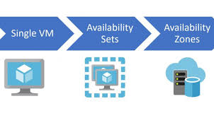
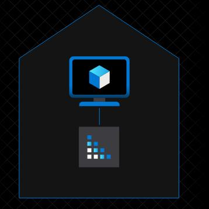
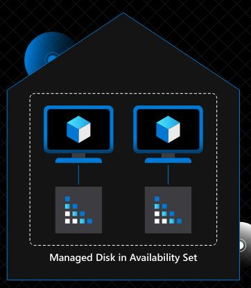
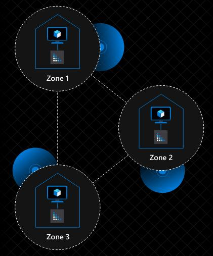
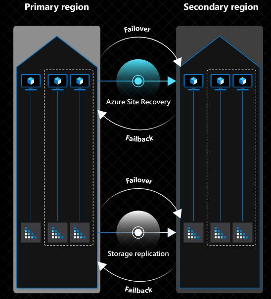

Zonas e Regiões de disponibilidade Azure.
A Azure disponibiliza uma capacidade de disponibilidade de seus serviços de forma
a entregar resiliência e confiabilidade nos seus produtos.
O que tudo isso quer dizer na prática?
Ao utilizar serviços Azure, a Microsoft garante um percentual de disponibilidade das
suas aplicações dependendo da escolha de redundância, em outras palavras, mesmo que
sua aplicação caia por qualquer motivo, ela não ficará mais que alguns segundos fora do ar.
O tempo de recuperação da aplicação ou serviço vai depender do tipo de redundância que escolher,
que podem ser: Redundância Local, Redundância de Zonas e Redundância Regional.
Para cada tipo de contratação de redundância terá um custo diferente, quanto maior o tempo de
disponibilidade/recuperação maior o custo.
Definindo cada redundância Azure.

A primeira opção que teremos é sem a contratação de redundância, a Single VM, onde teremos
uma única instância do serviços, mas mesmo que a instância caia ela é recuperada rapidamente,
sendo um SLA de 99,9% ao ano.

A segunda opção seria a Redundância Local ou Availability Set, onde teremos dentro de um mesmo
data center 2 instâncias do serviços em racks separados, assim, mesmo que uma instância caia,
teremos outra funcionando, essa modalidade tem um SLA de 99,95% ao ano.

A terceira opção é a Redundância por zona ou Availability zone, onde teremos instâncias espelhadas
em “n” data centers de uma mesma zona de atuação, se um data center cair, ainda teremos outro data
center disponível, essa modalidade tem um SLA de 99,99% ao ano.

A última opção é uma Redundância por região, onde teremos instâncias espelhadas em “n” data centers
e em outra região separada por 300 milhas de distância, ou seja, se uma região por qualquer motivo
seja por falta de energia ou queda de rede, ainda teremos a disponibilidade do serviço atendendo em
outra região, essa modalidade entrega um SLA quase zero por ano.

Verificando a necessidade de disponibilidade da sua aplicação fica a cargo do Devops escolher qual a
melhor modalidade solicitar.
Conclusão.
Fica claro que os serviços nas nuvens Azure são bem seguras e confiáveis, entregando um SLA muito
próximo do zero, fica a cargo do cliente escolher o melhor custo benefício de redundância adotar.